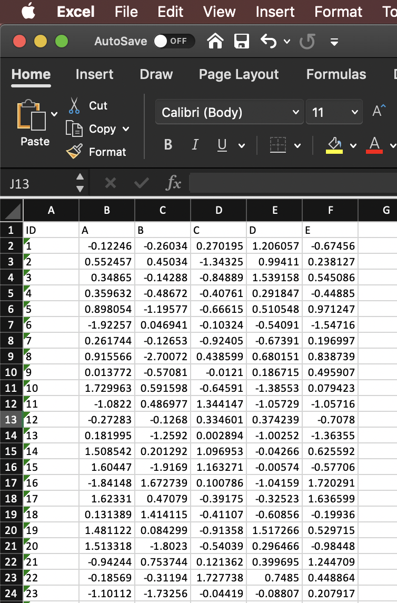

Plot heatmap
ggplot(data, aes(y=ID, x=species, fill= score)) +
geom_tile(color = "white") +
coord_equal()
here() starts at /Users/thiyangashaminitalagala/Lecturer/ThiTalIn this dataset there are three variables
ID (Time order is represented by row names.)
Species (There are 5 levels: A, B, C, D, E. This variable is spread across column names.)
Score (This is represented by the cell values.)
I want to plot head-map as follows
X-axis: ID
Y- axis: Species
Cell: score

library(here)
library(tidyverse)
library(readxl)data <- read_excel("datafile.xlsx")# View the first few rows of data
head(data)## # A tibble: 6 × 6
## ID A B C D E
## <chr> <dbl> <dbl> <dbl> <dbl> <dbl>
## 1 1 -0.122 -0.260 0.270 1.21 -0.675
## 2 2 0.552 0.450 -1.34 0.994 0.238
## 3 3 0.349 -0.143 -0.849 1.54 0.545
## 4 4 0.360 -0.487 -0.408 0.292 -0.449
## 5 5 0.898 -1.20 -0.666 0.511 0.971
## 6 6 -1.92 0.0469 -0.103 -0.541 -1.55data <- data %>% pivot_longer(!ID, names_to = "species", values_to = "score")
data$ID <- as.numeric(data$ID)
head(data)# A tibble: 6 × 3
ID species score
<dbl> <chr> <dbl>
1 1 A -0.122
2 1 B -0.260
3 1 C 0.270
4 1 D 1.21
5 1 E -0.675
6 2 A 0.552ggplot(data, aes(y=ID, x=species, fill= score)) +
geom_tile(color = "white") +
coord_equal()